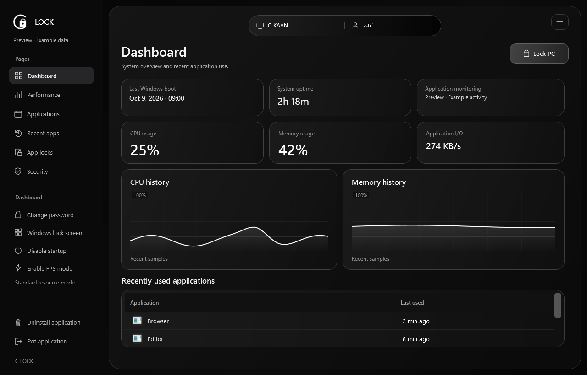
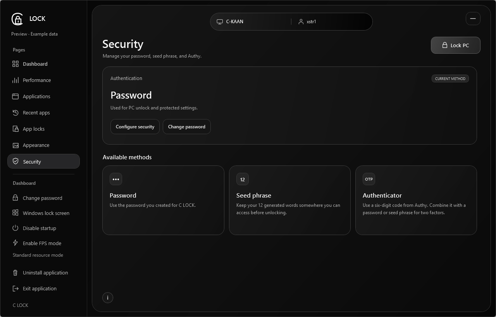
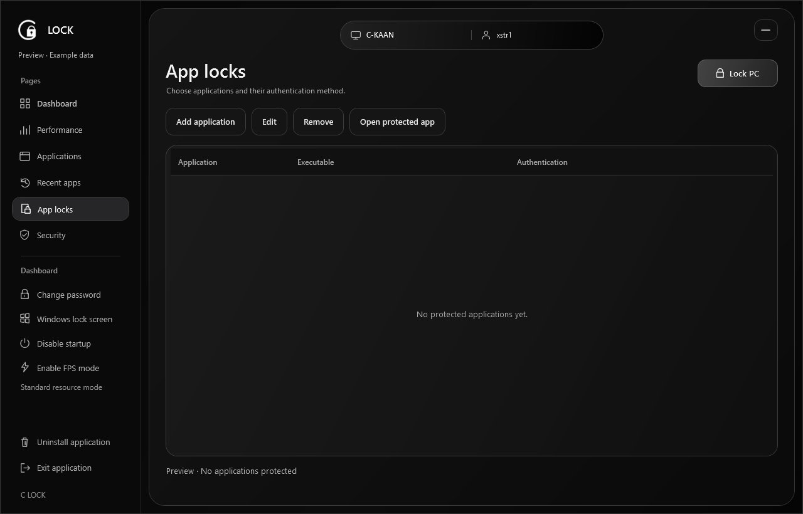
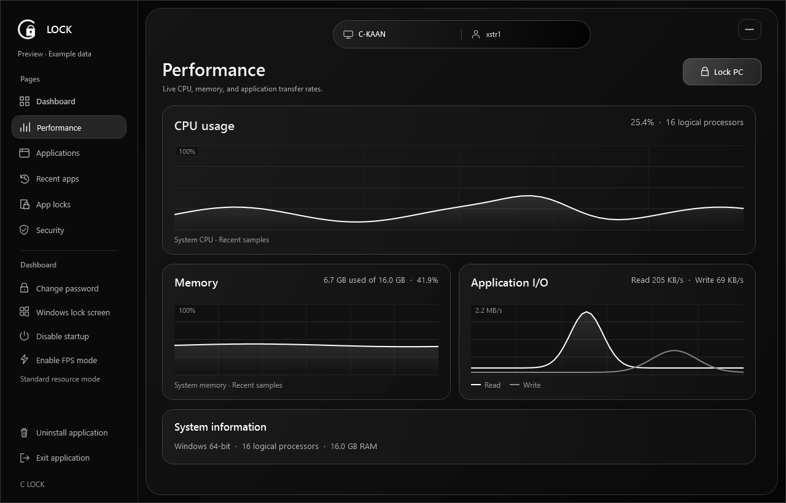

Flexible sign-in
Password, 12-word passphrase, and authenticator-code options.
PROJECT FILE / 01 | 2026
A personal Windows app that brings desktop locking, application access, and system visibility together.

01 / OVERVIEW
C LOCK is a Windows desktop lock and access control app. A customizable lock screen sits alongside a system overview, performance charts, recent application activity, and application locks.
02 / FEATURES
Password, 12-word passphrase, and authenticator-code options.
Access control for selected local desktop applications.
A local view of CPU, memory, and application activity.
Pauses background collection to reduce resource usage.
C LOCK adds a desktop lock layer. Windows sign-in remains the security boundary, and the native Windows lock is available separately.
03 / APP PREVIEWS


